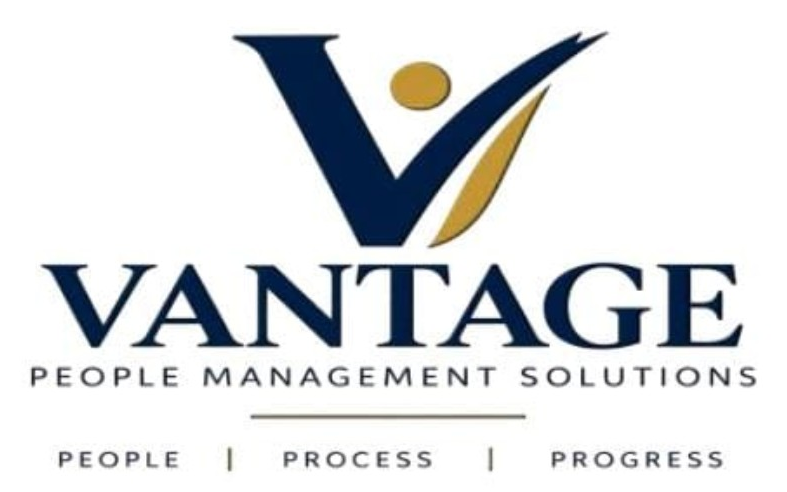

Human Resources Consultancy
HR policies, procedures, employee-file structures, onboarding and offboarding, leave and attendance processes, job descriptions, disciplinary frameworks and workforce planning.

ABU DHABI • UNITED ARAB EMIRATES
Vantage helps businesses identify operational gaps, strengthen internal systems and build practical ways of working that people can actually use.
People • Process • Progress
PRACTICAL CONSULTANCY
Work can be moving every day while information remains scattered, responsibilities unclear and reporting inconsistent. Vantage helps turn those gaps into practical, structured systems.
ABOUT VANTAGE
Vantage People Management Solutions is an Abu Dhabi-based consultancy supporting organisations across people, management, administration, communication and marketing.
We begin by understanding the current situation, identifying the gaps and developing solutions suited to the organisation—not adding complexity for the sake of it.
OUR CONSULTANCY AREAS
HR policies, procedures, employee-file structures, onboarding and offboarding, leave and attendance processes, job descriptions, disciplinary frameworks and workforce planning.
Clearer responsibilities, reporting structures, operating processes, SOPs and management systems that improve accountability and visibility.
Administrative workflows, document control, trackers, reporting tools, filing structures and practical systems for day-to-day operations.
Corporate and stakeholder communication, company messaging, communication planning and professional organisational image.
Customer and target-market analysis, positioning, competitor review, promotional strategy and market studies.
FROM BUSINESS GAP TO WORKABLE SYSTEM
Structure information flows, trackers, reporting routines and management visibility.
Define roles, workflows and reporting lines so accountability is easier to manage.
Review the employee lifecycle and build practical policies, forms and procedures.
Assess positioning, audiences, competitors and promotional priorities.
HOW WE WORK
FOUNDER & MANAGING CONSULTANT
Vantage is led with a practical, hands-on approach to people and business processes: understand the challenge properly, create a workable solution and help the organisation move forward with greater clarity.
“Not complicated systems for the sake of looking professional. Systems people will actually use.”
START A CONVERSATION
Start with the business challenge. We can discuss the right consultancy scope from there.
Abu Dhabi, United Arab Emirates